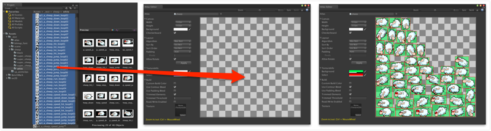
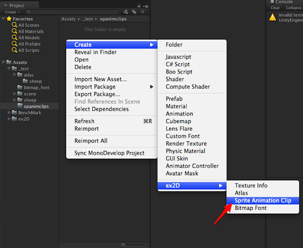
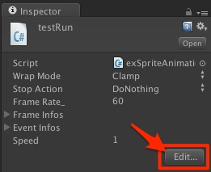

Quick Start
This page will quickly guide you through the working pipeline of ex2D’s different component and editors. After reading this you’ll be ready to create your scene with sprites and animations!
If you haven’t import ex2D into your project, please follow the Installation first.
Create Atlas Asset
Select the folder where you want to put your atlas in Project View. Right click the folder and select Create -> ex2D -> Atlas to create an atlas asset.

Import Texture Into Atlas
Select the atlas asset we just created, in the bottom of Inspector window, click Edit… to open Atlas Editor.

Select textures you want to put into the atlas, and drag them into the Preview Window in Atlas Editor.

Wait until ex2D finish processing the textures. Then we will find a new folder created in the same folder of atlas asset. This folder has the same name with the atlas asset. It contains all the imported and processed texture information files (TextureInfo). We will be dealing with TextureInfo all the time working with ex2D. You can treat them as the raw texture files with extra information that ex2D needs to know.
When Atlas Editor finish importing, we can click Build button on the top right corner of the window to generate the atlas texture. This texture will be saved to the folder that holds all the TextureInfo of this atlas. You can click any TextureInfo to check the preview window at the bottom of Inspector to see if the it is mapped correctly from the atlas texture. You should be able to see the same picture as the raw texture file in the preview.
Create a Sprite In Your Scene
Let’s take a newly created scene for example. The first step is to setup the camera. Select the main camera in the scene. In Inspector window click Add Component and select 2D Manager.

Click Edit… button in 2D Renderer component. This will fire up 2D Scene Editor. This editor will provide the environment to easily arrange your scene for 2D graphic.

Before we create a Sprite, we need a Layer to hold its renderer. Click the + button in Layers section of 2D Scene Editor to create a new Layer. Select the newly created Layer, pick the TextureInfo you want your sprite to have from Project View and drag it into 2D Scene Editor window. Your first Sprite will be created in the new Layer.

Create A Sprite Animation Asset
This is similar to the process of creating Atlas. Select a folder in Project View, Right Click with your mouse and select Create -> ex2D -> Sprite Animation Clip. This will create a new Sprite Animation Asset in selected folder.

When you select the asset in Project View, click Edit… button in Inspector window will fire up the Sprite Animation Editor so you can Edit the Sprite Animation clip.

In the Sprite Animation Editor, we can find a timeline for editing and and preview window. Let’s drag the TextureInfo ( IMPORTANT: Not the raw textures, but TextureInfo files ) files into the timeline. Then you can drag the TextureInfos around to arrange it perfectly for your desired animation.

Create A Sprite With Animation In Your Scene
If you already know how to create a Sprite, make a Sprite with animation is very simple. Just drag your newly created Sprite Animation Clip into the 2D Scene Editor will do the work.
Create A Bitmap Font Asset
We assume you know how to create a BitmapFont (consist of a .png texture file and a .fnt/.txt control file) with tools like GlyphDesigner, Hiero or BMFont. Check these tools' website if you are not familiar with BitmapFont yet.
Once you have your BitmapFont files ready, put the font texture (.png) and control file (.txt/.fnt) into your Unity project. Select the control file (.txt/.fnt), Right Click it and select Create -> ex2D -> Bitmap Font. ex2D will process the BitmapFont files and generate a Bitmap Font Asset ready to use for ex2D.

Create A Sprite Font In Your Scene
I think you know the drill already. Similar to Sprite and Sprite Animation, all you need to do is drag the Bitmap Font Asset into the 2D Scene Editor.